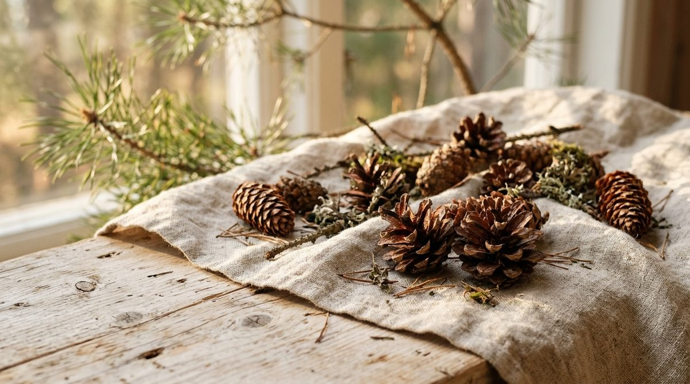

Höst- & vinterskörd · Dalarna & Värmland
Handplockade kottar från svenska skogar
Skonsamt ugnstorkade, borstade för hand och sorterade efter form och lyster. För säsongens dukningar, kransbindning, skapande och en ren, väldoftande brasa.

Butik
Säsongens utvalda kottar
Varje påse och låda packas för hand i vår verkstad vid Siljan. Klicka på en produkt för att välja storpack eller läsa mer.
Från skog till bord
Varför kottar som behandlats med omsorg gör skillnad
En kotte direkt från marken bär ofta fukt, kåda och små skogsgäster. Vi förbereder varje skörd så att du kan ta in naturen utan besvär.
Varsam plockning från marken
Vi samlar endast mogna kottar som redan fallit naturligt efter torra höstdagar i hållbart brukade skogar i Dalarna och Värmland — alltid i samarbete med lokala markägare.
Långsam ugnstorkning vid 95 °C
Varje omgång borstas ren från barr och jord och värmebehandlas varsamt. Det tar bort eventuella insekter, mjukar upp kåda och får fjällen att slå ut i sin mest symmetriska form.
Handsorterade & plastfritt packade
Vi delar in kottarna efter storlek och helhet och bäddar dem i svensk träull, kraftpapper och oblekt jutesnöre. Hela paketet är komposterbart eller återvinningsbart.
Skötselråd & Botanik
Ett levande naturmaterial som följer årstiderna
Kottar fortsätter reagera på luftfuktigheten även långt efter att de fallit från trädet. Med enkel förvaring håller de i många år.
I torr inomhusluft öppnar fjällen upp sig helt för att släppa ut frön. Ställer du ut en krans i fuktigt höstväder sluter sig fjällen försiktigt — och öppnar sig igen när luften torkar.
Förvara dem torrt i en pappkartong, tygpåse eller trälåda — aldrig i täta plastpåsar där restfukt kan stängas in. Då behåller de sin färg och form i åratal.
Placera en bivaxkotte under ett par kluvna, torra vedträn med luft emellan. Tänd bomullsveken i toppen — inom några sekunder brinner kotten med stabil låga i 10–12 minuter utan kemisk rök.
Ja. Alla våra dekorationskottar är helt obehandlade med lack, blekmedel eller doftoljor. De är enbart mekaniskt borstade och ugnstorkade för att vara rena och insektsfria.
Kransen trivs bäst inomhus eller på en ytterdörr under tak. Kottarna klarar kyla utmärkt, men om de blir genomblöta under lång tid drar fjällen ihop sig tillfälligt.
Partiförsäljning · Florister & Inredare
Behöver ni kottar i storsäck till butik, hotell eller juldukning?
Vi levererar sorterade 50-liters jutesäckar med tall-, gran- och lärkkottar direkt från Dalarna med fast företagspris och faktura på 30 dagar.